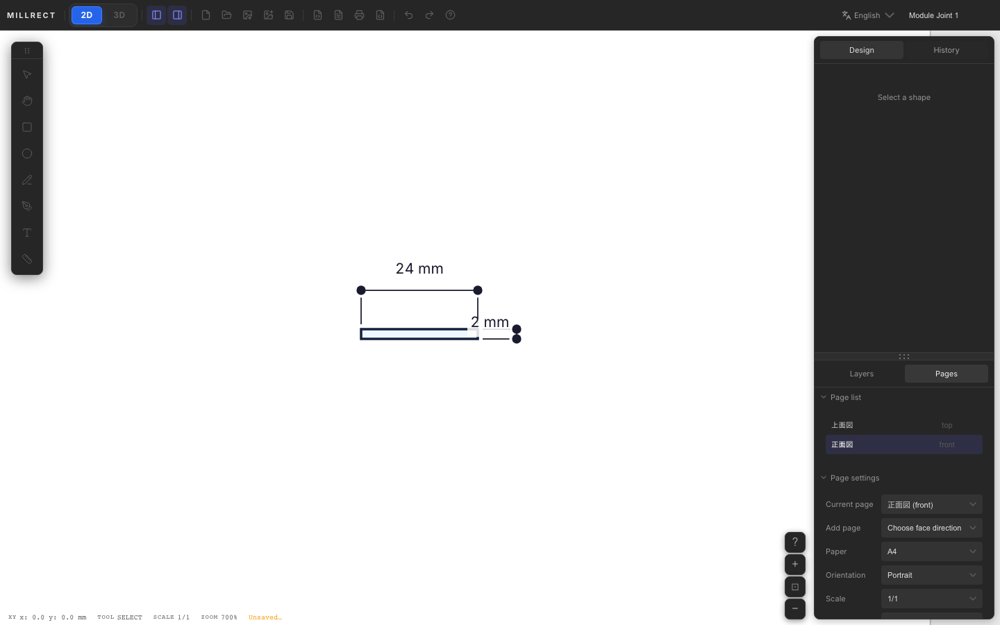
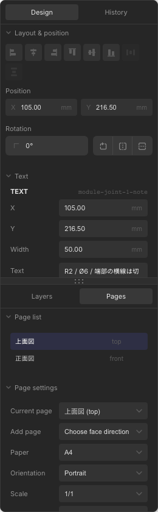
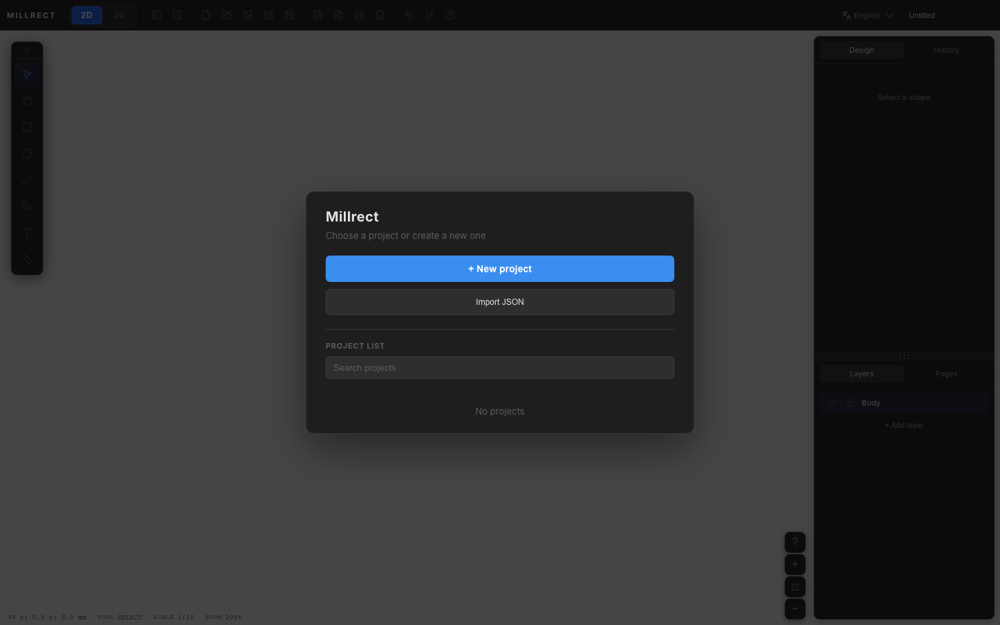

3D Generation
How to generate a 3D model by combining multiple orthographic views — top, front, and right side.



How it works
In Millrect, the final 3D shape is found by intersecting solids extruded from each page’s closed outline along that page’s projection direction.
Think of it this way: “slabs” from the top, front, and side views overlap — the overlapping region is the actual solid. With three views, the shape is much easier to visualize.
A top view alone, or a front view alone, cannot produce a solid. You need pages in at least two different directions (e.g. top + front, or top + right side).
Add pages by face direction
Decide which direction a page represents when you create it. In the right-panel Pages tab,
use Add page and choose the face direction: top, front, right, and so on.
If a face already exists, it is disabled in the menu so you cannot add another front page by mistake.

| Setting | Meaning |
|---|---|
| Top (top) | View from above (width × depth) |
| Front (front) | View from the front (width × height) |
| Right side (right) | View from the right (depth × height) |
| Bottom / Back / Left | Projection from the opposite direction |
Start from a blank project
The startup dialog now focuses on the project list, JSON import, and blank project creation. To build your own 3D model, choose + New Project, draw the top view, then add the needed face pages in the Pages tab.
- Top view: draw the width × depth outline
- Front view: draw the width × height outline
- Right view: draw the depth × height outline when needed
Open samples/module-joint-1.json or another sample from startup Import JSON.
Walkthrough: Module Joint 1 (24×100×2 mm)
The documentation uses the real Module Joint 1 product as a common specimen. It shows a 24×100 mm outline, Ø6 holes, R2 notches, cut lines, and 2 mm thickness on A4 portrait at 1:1 scale.
A simple rectangle is enough to understand the 3D mechanism. The real product specimen shows how drawing, dimensions, holes, sections, and STL export stay connected in one flow.
- Top — Draw the 24×100 mm outline, Ø6 holes, and cut lines →
drawing-rect.png - Detail the drawing — Add 24 mm, 100 mm, Ø6, and 10 mm pitch dimensions →
drawing-features.png - Front — Add front view (front) and draw the 24×2 mm thickness section →
multiview-front-drawing.png - 3D preview — Verify and export STL →
3d-panel.png



- Top view: 24×100 mm joint plate (width × length)
- Front view: 24×2 mm thickness section (width × thickness)
- Paper: A4 portrait, 1:1 scale
- Top + section pages are enough to verify the thin-plate solid
Step-by-step details
The same Module Joint 1 specimen from an empty project.
-
Page 1 — Top view
Use the initial page as the top view. Create the 24 mm × 100 mm outline, then add Ø6 holes, R2 notches, and cut lines. -
Page 2 — Front view
In the Pages tab, use Add page and choose front view (front). Draw the 24 mm × 2 mm thickness section. -
Page 3 — Right side (optional)
Use Add page and choose right view (right) when side-specific details are needed. Two pages (top + front) are enough for this thin plate.

-
Open the 3D preview
Click 3D on the left side of the toolbar. The preview panel appears immediately; the mesh appears after generation finishes. -
Export STL
Use the STL button at the top right of the 3D panel to save a file for 3D printing.
Color mapping
The fill color set on 2D shapes is used as the mesh color in the 3D preview. Change color under Appearance in the Design tab to update both the drawing and 3D (Editing — Appearance).
- If all shapes have no fill, 3D uses the default blue-violet (#5965f9)
- When shapes use different fills, Millrect creates meshes grouped by color. Shapes with the same fill are merged into one mesh
get3DSceneStatus().materialColorsreturns the color list currently present in the 3D preview- Stroke color, text color, and dimension color are not reflected in the 3D mesh
To color-code parts, create separate closed contours in the primary view and assign different fills. Parts with the same fill are grouped together in 3D.
When things go wrong
- No 3D shown — Check that you have a front or side page in addition to the top view
- Wrong shape — Verify rectangle sizes on each page represent the same object (top width = front width, etc.). Page-to-page placement still matters, so keep views aligned
- Open outline — Lines alone do not become 3D. Use rectangles, closed beziers, or composite paths
- After editing the drawing — Close and reopen the 3D preview, or refresh it, to update the mesh
Holes and cutouts
Draw an outer path and inner circles (holes) on the top view, or use Boolean subtract, to generate 3D models with through-holes. Match hole position and size across projection views.
The 2D Drawing example uses a top path with an inner hole. Holes on the top view only, plus a solid front outline, yield a tray with a bottom in 3D.
Confirm the shape in the 3D preview before exporting STL. Check orientation and scale in your slicer before printing.